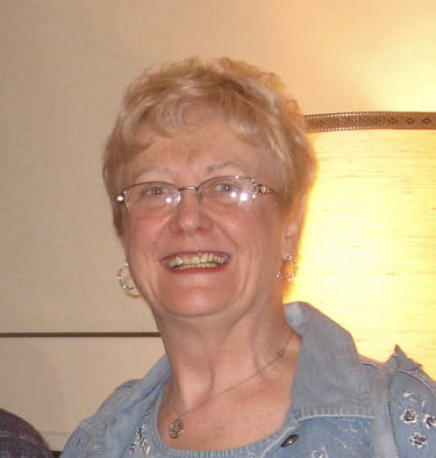

-1-MasterItem.svg)
Stories of Westminster United Church & its People / Page
158
In 1968 Mary Ann Taylor (pictured) became our soprano soloist, a position
she held till 1983. She was later to take on the service of Alto soloist in
1989.
In February 29 of that year the Choir participated in a choral festival at
St. Stevens Broadway Church under the direction of Filmer Hubble, a respected
organist in Winnipeg. The next year, the Canadian College of Organists
sponsored the same event at Westminster with 300 singers participating.
The music was not well served but the joy of lifting one’s voice
in union of hundreds of others was unforgettable.
In April, 1969 Westminster and Oxford Street choirs joined forces to present
Benjamin Britten’s
Rejoice In The Lamb. Glen’s wife, Margaret, was organist and choir leader at Oxford back then.
Margaret later retired and joined her husband at Westminster as a chorister.
1970, April 26th: The Chamber Orchestra of the Winnipeg Youth Orchestra and
Westminster Choir
presented Vivaldi’s Gloria and Britten’s festival
Te Deum
. The soloists were Mary Ann Taylor and
Joanne Williams, sopranos, Elona Schellenberg, alto, Bruce Linney, tenor and Ted
Marshall, baritone.
450 people attended the performance.
1971, Christmas Eve: A Nativity play,
The First Nowell
, was the principle part of the Annual Christmas
Eve service. Twenty children and young people of the congregation acted the
parts while the choir
and soloists Mary Ann Taylor, Elona Schellenberg, Bruce Linney, Ted Marshall,
Roy Halstead and
David Waters presented the music. Costumes were, again, by Dr. Leathers.
Table
of Contents
Music at Westminster
